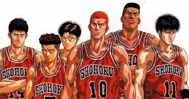

まじで面白い！個人的オススメ漫画！【スポーツ】編
[このページは個人的にオススメな漫画をジャンル別に紹介するページです]
漫画1「スラムダンク」

井上雄彦による少年漫画作品。赤髪で不良の主人公桜木花道は、一目惚れした少女目当てにバスケ部に入部する。
破天荒な性格で、予想外のプレーで周囲を驚かせる。バスケットマンとして徐々に成長していく物語。
コメント…ひょんなことからバスケ部に入部した桜木花道が成長していく姿がとてもかっこいい！誰もが知っているあの名台詞も…。
最終場面に近づくにつれてのすさまじい画力にも注目‼
名言★★★★★
喧嘩★★★★☆
画力★★★★★
漫画2「DAYS(デイズ)」
安田剛士による漫画作品。中学ではいじめられっ子だった主人公柄本つくし。サッカーの天才である風間陣との出会いによりサッカーに出会う。
サッカーの名門聖跡高校に入学し仲間とともに成長していく物語。
コメント…最初は馬鹿にしていたチームメイトが、主人公の努力する姿を目にし、認めていく姿にとても感激！ただひたすらに突っ走る、そんな姿にとても感動する作品！
努力★★★★★
感動★★★★★
仲間★★★★☆
漫画3「ラストイニング」
中原裕による漫画作品。主人公が監督という珍しい野球漫画。試合だけでなく裏側まで描いた作品。
ありがちなスポ根ではなくとても実力の土台固めから始めていく野球に対しとても理論的な漫画。
コメント…非常に理論的な漫画になっており野球好きにはたまらない漫画。といっても、熱くなる場面は盛りだくさん‼の超リアルな野球漫画。
理論★★★★☆
リアル★★★★★
読みやすさ★★★☆☆